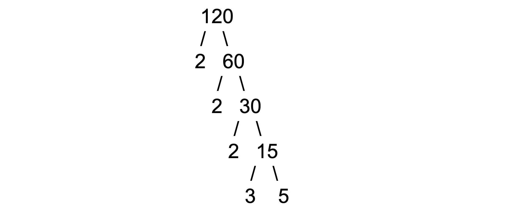

Two simple proofs of the infinity of primes
Prime numbers are whole numbers that are only divisible by 1 and themselves. Students first learn about them in middle school, around the time when teachers are first introducing pesky equations with weird not-numbers like x and y. Remember these factor trees? All you need to know is division to construct one.

But this simple rule of division turns out to be the basis the most pure of the pure of mathematics. Well, pure in the sense it routinely steals from other, seemingly unrelated math disciplines and constructs and beautiful Frankenstein-like whole called number theory.
Primes start with 2, 3, 5, 7, 11, 13, 17, 19, 23, 29, etc. Then next is 31. Then 37. It keeps going. Currently the largest known prime is very big — 24,862,048 digits long. If you typed it out, it would be two and a half times the length of the Game of Thrones series.
But how far can we go? Are primes infinite?
•••
Euclid’s Proof on the Infinity of Primes
The infinity of primes has been known for thousands of years, first appearing in Euclid’s Elements in 300 BCE. It’s usually used as an example of a classically elegant proof.
It goes something like this:
To prove that there are an infinite number of primes, we need to first assume the opposite: there is a finite amount of primes. Without pesky infinity in our way, let’s just list them.
If we multiply all of these p’s together, we’ll get another number, the product of primes. Let’s add one to this and call this number q.
What is q? We have two options here: q is prime, or q is not prime (aka q is composite).
Looking at the first option, we already have a contradiction. We know q is not prime because we said so. Remember we just listed all the primes and q was not on the list. If it was a prime, it would be on the list and not on the list at the same time, which doesn’t make a whole lot of sense. So it must not be prime.
We have one option left: we are forced to assume q is composite. That is, it has prime factors — two of the primes on our list! But which ones? Let’s try p1. But we run into a problem here. Dividing q by p1 gives us
The left side of the equation we know is an integer because any number divided by one of its factors is another factor (which is an integer). The product is an integer because all primes are integers. But 1/p1 cannot be an integer except when p1 is equal to one. And we know it is not because 1 is not on our list (remember: one is not considered a prime). No matter how hard we try, a decimal plus an integer will not equal to an integer. Because of this contradiction, q cannot be composite.
We have no options left for our poor q, so it must not exist. We cannot create a list of all the primes, they must go on forever.
A fun historical fact is that when Euclid proved the infinity of primes he did not do basic algebra like I did, although his argument was the same. Algebra did not exist yet. In fact, his very idea of numbers itself was very different from our own. The ancient Greeks made a distinction between numbers, ratios, and measures. Euclid considered prime numbers “that which is measured by unit alone.” To him, prime numbers were not numbers but an uncuttable unit of length. In other words, he proved the infinity of primes with nothing but some geometric intuition.
Now for the more complicated (and clever) proof discovered by Christian Goldbach in 1730.
•••
Goldbach’s Proof on the Infinity of Primes
The problem with primes is that there is no easy formula to find the next prime other than going through and doing some division, although there have been many attempts. It’s one of the reasons primes are so important in cryptography today.
So early mathematicians tried to solve the next-best thing: if they couldn’t find a function that spit out all primes, could a function be found that spit out only primes? Pierre de Fermat thought yes. A Fermat number is a number in the form
Plug in n = 1, we get 3. Then 5, 17, 257, 65537, 4294967297. All prime! Well, not quite. Turns out Fermat made a math error, 641 is a factor of 4294967297. In fact, there don’t seem to be any more primes in the sequence after the first five.
But Fermat numbers still have a few tricks up their sleeves. It turns out any two Fermat numbers are relatively prime.
Relatively prime is a bit of a misleading terms — two numbers are relatively prime when their greatest common divisor is one. For example, the factors of 35 are 1, 5, 7, and 35. The factors of 6 are 1, 2, 3, and 6. Because their greatest common factor is one, 35 and 6 are relatively prime. If you draw a prime tree for each number, the trees shouldn’t have any common numbers between them. Alternatively, their least common multiple is found by multiplying the numbers together.
If all numbers in a set are relatively prime, none of their factors are shared. Think about what this set might look like: it can have at most one even number because all even numbers are divisible by two. We can only have one number that ends in 5.
The next question we might ask is: can we have an infinite set of relatively prime numbers? Since every number in this set could be broken up into “buckets” of its unique primes, this would also prove the infinity of primes. After all, you’d need an infinite amount of primes to populate an infinite list of relative primes. Each relative prime would hog at least one prime exclusively.
Let’s get back to Fermat numbers. Goldbach proved Fermat numbers satisfy the recurrence relation:
You can obtain the nth Fermat number from using all the previous Fermat numbers! You don’t even need the exponential formula. Try it out:
F2 − 2 = 15 = 3 × 5 = F0 · F1 ✓
F3 − 2 = 255 = 3 × 5 × 17 = F0 · F1 · F2 ✓
def nth_fermat_number(n):
if n == 0:
return 3
else:
val = 1
for i in range(n):
val *= nth_fermat_number(i)
return val + 2To prove this recursion mathematically, we use a proof by induction. Our first step will be to show this formula is true for the first and second Fermat number. Then we are going to prove that if it is true for the nth case, it must be true for the nth+1 case. All the cases will then cascade like dominos. The first case proves the second which proves the third which proves the fourth and on and on and on.
Step 1. It is true for first case
Step 2. Show that if the nth is true then nth + 1 is also true. We start by assuming it is true, then work backwards
We start with the product of sequence of Fermat primes, which is equal to itself (1). Now we suspect that each Fermat is equal to product of the previous ones minus two. So we single out the product of the previous with the parenthesis (2). Assuming our recurrence is true, it should equal two less than the nth Fermat number (3). Plug in the definition of Fermat numbers (4 and 5) and do some basic algebra with the difference of squares (6). We are left with an exponent and a subtraction which can be easily converted back into the Fermat number formula. What we are left with is the recursion.
From here, it is easy to prove Fermat numbers are pairwise relatively prime. We’ll use the same trick as before in Euclid’s proof.
Let’s say some factor f divides the nth Fermat number Fn as well as some other, smaller Fermat number. Therefore, we know the entire right side of the equation is an integer because all Fermat numbers smaller than Fn are contained in that product, and we said at least one of these is divisible by f.
Well since the entire right side of the equation is an integer, the entire left side must be too. We know the term Fn/f is an integer because dividing by one of your own factors is an integer. So 2/f should be too. The problem is 2/f is always a fraction unless f = 1 or f = 2. One is not a prime, so it can’t be f. And look closely at the sequence of Fermat numbers — two to any power is always even and subtracting one from an even will always be odd. All Fermat numbers are odd. We are left with no factors that work for f. Therefore, no factors can evenly divide both Fn and some smaller Fermat number.
All Fermat numbers must then have a unique factorization. Each Fermat number can then be thought of as a set of disjoint primes. Since the Fermat sequence goes to infinity, we have an infinite set of unique prime numbers. Tada! Primes are infinite.
•••
Of course, now we can do better. In 2013, a collaborative effort started by Yitang Zhang and worked on by Terrance Tao proved that not only are there an infinite number of primes, but there are infinite sets of primes certain distances apart. The lowest current bound is 246.
References:
“Proofs from THE BOOK” by Martin Aigner and Günter M. Ziegler. Springer.